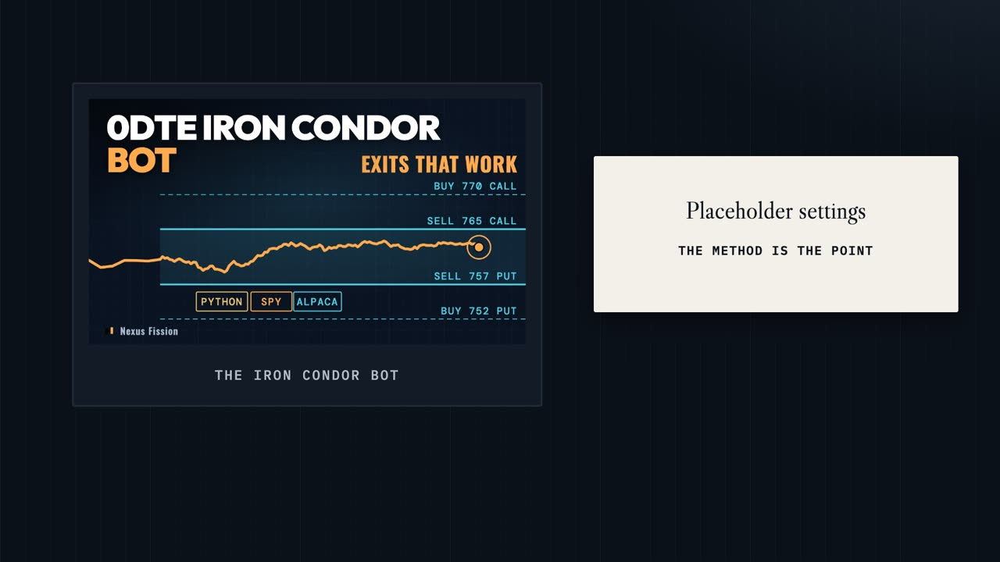
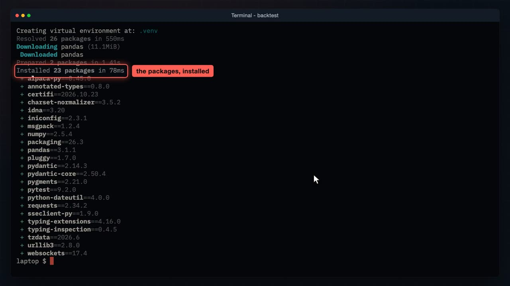
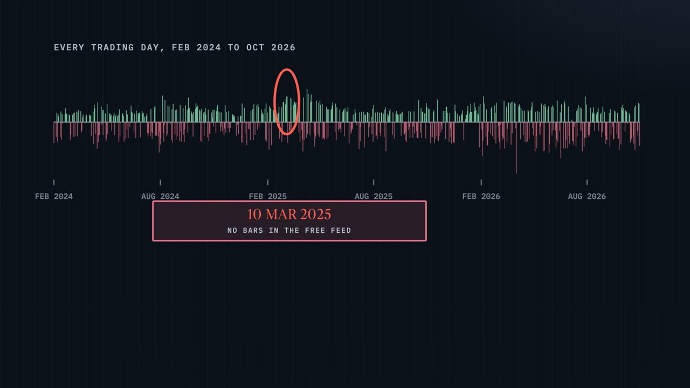
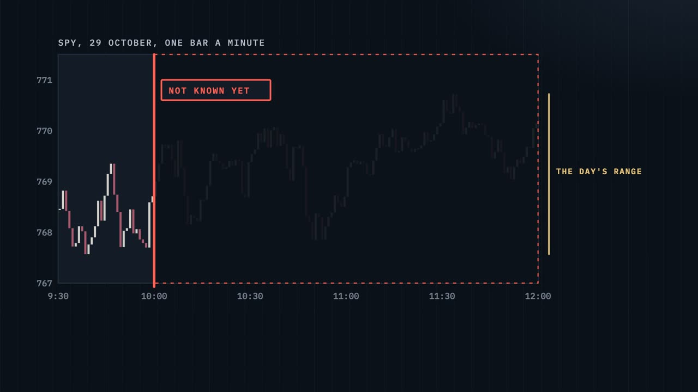
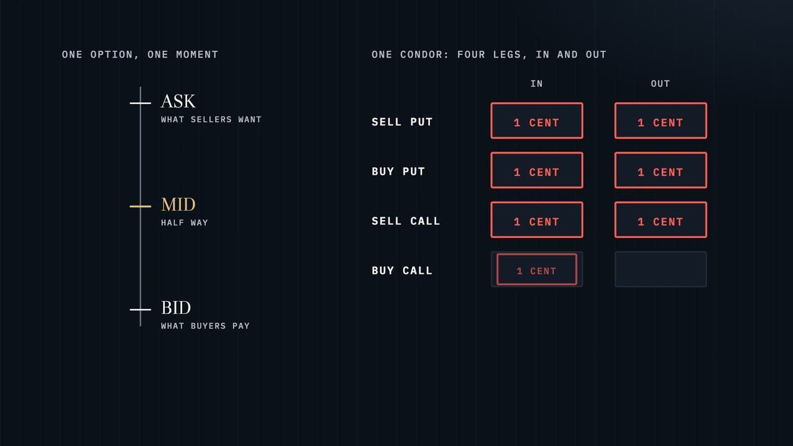
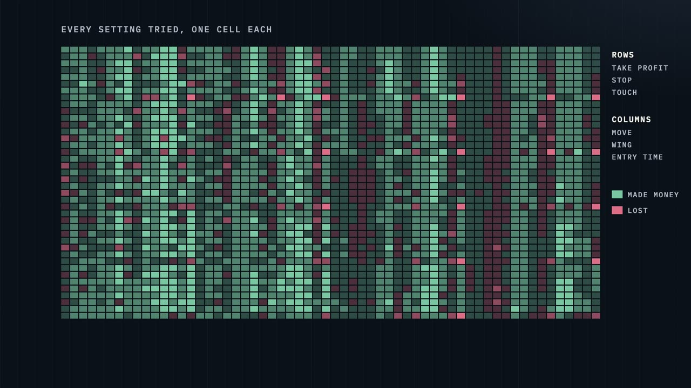
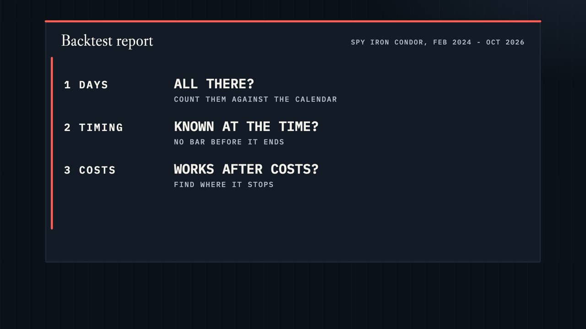
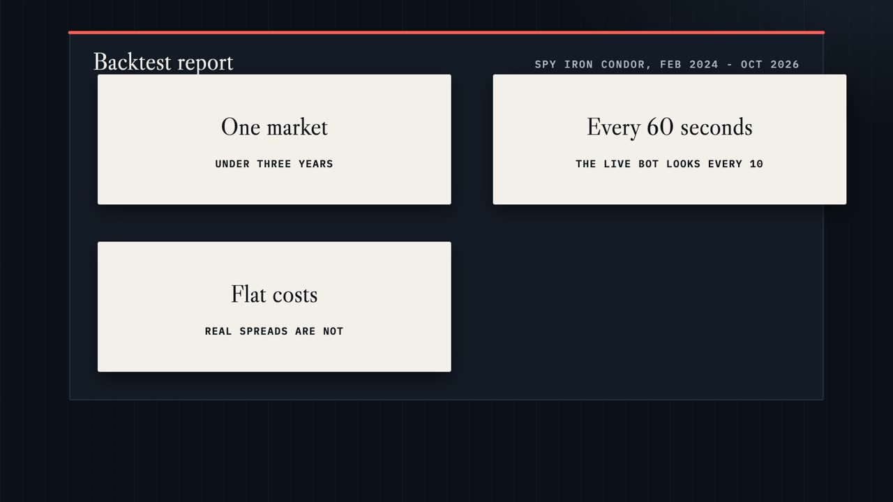

Lessons / Options, earnings and volatility
Backtesting Options: 4 Mistakes That Fool You, and What to Check (Python, Alpaca)
How to backtest an options strategy without fooling yourself: four common mistakes (missing days, looking ahead, forgetting costs and keeping the best of many tries), each shown on real data since February 2024, with what to check for each. For education only, not financial advice.
Prices and numbers are as of the video's publication, November 14, 2026.
The code for this lesson: github.com/nexusfissioncode/algo-trading/tree/main/backtest
What a backtest is Watch from 0:46

First, what a backtest is. You take a trading idea, and replay the past through it, as if you had traded it back then.
We will use the iron condor bot from the last video. Its settings are placeholders. This video is not about whether iron condors work. It is about how to test any idea without fooling yourself.
For one day, the bot sees the morning one bar at a time, just as it happened. It opens a trade, and closes it when its rules say so.
Then you do the same for every trading day. Here, that is 690 days, since February 2024.
Three words you will hear a lot. In sample means the days you used to choose your settings.
Out of sample means the days your settings have never seen. Only those tell you anything about the future.
And cost means what you pay each time you buy or sell. A backtest has to guess it.
Run one yourself Watch from 1:42

Here is the project folder.
This is the backtest program. It runs everything.
These are the bot's own files, copied as they are, so the backtest runs the exact code that trades.
One command reads the project file and installs every package it needs, in a few seconds.
And your paper trading keys go in the environment. Here they only read market data.
Next, download the prices. For every day, the program saves SPY's price as one bar every 60 seconds, and the same for the options that expire that day.
Each bar holds the open, high, low and close of those 60 seconds. Alpaca's free data has these for options since February 2024.
The download fetches one day after another, so it takes a while.
690 trading days, counted as they arrive.
Look at this line. On the tenth of March 2025, the free stock feed has no bars at all. So the program switches to the whole market's feed for that day, instead of losing it. Keep that in mind.
Everything is saved on this computer, so every run after this needs no network.
Now one run: the bot with its settings as they shipped, on every day, paying nothing to trade.
The bot runs on every day we saved.
681 days with a trade, and nine with none.
This line shows how each trade ended. 355 hit the profit target, about half.
And the total: $172 down, before paying anything to trade.
As a chart, one trade a day: it climbs through the first half, then gives it all back.
That is our first number. Now, the four ways a number like this can fool you.
Mistake 1: missing days Watch from 3:25

Mistake one is missing days. Here is every trading day, one bar each. If some days go missing, the result changes, and nothing warns you.
Remember the tenth of March 2025? The free feed had no bars for it. Code that simply skips a day like that drops a trade without a word.
Check: count the days. Days with a trade, plus days with none, should equal the trading days. Here, 681 plus nine makes 690.
Mistake 2: looking ahead Watch from 3:55

Mistake two is looking ahead. That means the code uses something it could not have known at the time.
Say the bot decides at ten o'clock. It may use everything up to ten, and nothing after.
Now take a rule like, skip the wild days. But you only know how wild a day was once it has closed. So that rule peeks at the future.
Let's test it. Here is the bot on every day, paying half a cent each time it buys or sells.
$2,896 down.
Now skip the wildest days, judged by each day's full range.
Suddenly it makes $1,684.
Now the same rule, using only what is known at ten: the first half hour.
$1,900 down. The rule was never good. The gain came from peeking.
On a chart, peeking is easy to miss. It just looks like a great rule.
Judged at the close, the line climbs.
Judged at ten, it sinks with the rest. So when a rule looks too good, ask: at what time did it know this?
Peeking can also hide in the data itself. Each price bar is labelled with its starting time. So the ten o'clock bar is only complete at 10:01.
Our own replay used that bar at ten. So it saw 60 seconds into the future.
Here is the proof. On the 20 ninth of October, the bot made a real paper trade. It saw SPY at 769.68, and sold these strikes.
The fixed replay sees exactly the same.
The old replay, 60 seconds ahead, saw a different price and sold different strikes. We fixed it with one line, and added a test so it cannot come back.
Check: for every number your rules use, ask when it was known. And test that no bar is used before it ends.
Mistake 3: forgetting costs Watch from 5:45

Mistake three is forgetting what trading costs. Every option has two prices. The bid is what buyers will pay. The ask is what sellers want. The mid is half way between.
A backtest is tempted to trade at the mid. Real trades often do worse. An iron condor is four options, so opening and closing it takes eight trades.
Pay just one cent worse than the mid on each, and that is $8 a condor. The average credit was $78, so one cent eats about a tenth of it.
So what would each trade really have cost? Alpaca's free data has price bars and every trade, for options since February 2024.
But it has no past bids and asks. So with free data, nobody can look up what a fill cost on a past day.
Some providers have more data, including the bids and asks of past days: Databento, ThetaData, and Cboe's DataShop. Everything in this video uses only Alpaca's free data.
One options data company puts it plainly: a backtest that assumes mid-price fills is fantasy.
We cannot know the real cost. So we try a range of costs, and see where the idea stops working.
At no cost, $172 down.
At one cent per fill, 5620 down.
At three cents, more than 16,500 down.
These settings lose money even before any cost.
On the chart, every cent pulls the line further down. Every trade pays it, win or lose.
Check: run your backtest at several costs, and find the cost where it stops making money. If it only works at the mid, it does not work.
Mistake 4: the best of many Watch from 7:28

Mistake four catches careful people. The bot has six settings, like when to take profit, where to stop, and what time to enter.
Try a few values of each, and you get 2400 combinations. Each square here is one: green if it made money up to June 2025, red if it lost.
The values to try are listed in one file.
The program tries every combination of them.
All 2400, over every day. This takes a while.
The best one, chosen on the days up to June 2025, made
$3,421. On the days after, it lost 349.
The top 20 did worse, on average, than an ordinary setting from the middle.
And among 2400 coin flips, pure chance, the best one looks almost as good.
Here are all 2400 as a landscape. The higher the ground, the more that setting made, up to June 2025.
The winner stands on the highest peak.
Now the ground changes to the days after June 2025. The peak sinks, and other hills rise where nothing was before.
Here are the same squares. The red box is the winner.
Now colour them by the days after. 81% made money while they were being chosen. Only 57% made money afterwards.
When you try many settings, the best one is part skill and part luck. The luck does not repeat.
So how do you check? First, look at the neighbours: the settings one step away. If an idea is real, a small change should not break it.
The winner's neighbours all made money in the first period. In the next, they ranged from $1,061 down to 160 up. A real edge would not fall apart like that.
Second, walk forward. Choose the best setting using 12 months. Then trade it on the next six, which it has never seen. Then move along, and do it again.
Four rounds. Each winner made thousands in the months it was chosen on, and lost money in the months after.
In total, walking forward lost $3,365.
On the time line, each round chooses only from the past, then trades days it has never seen.
Every round picked a different winner, and every round lost money afterwards. That is what luck looks like.
Check: always keep days your settings never saw. Say how many settings you tried. And look at the neighbours, not just the winner.
Your checklist Watch from 10:02

So here is your checklist. Ask it of any backtest, yours or anyone else's.
One: are all the days there? Count them against the calendar. Two: did the rules only use what was known at the time?
Three: does it still work after costs, and at what cost does it stop? Four: how many settings were tried, and does it hold on days it never saw?
Our program prints the answers on one screen, for the bot's own settings.
Every day is counted, including the days with no trade, and none are left out.
How many settings were tried to find these numbers.
The result at a range of costs, from nothing to one cent per fill.
Each half on its own: a gain in the first, a loss in the second.
What the settings next door made, one step either way.
What walking forward made, choosing only on the past, round after round.
And last, honestly, what it could not test with the free data it had.
Limits and the code Watch from 10:56

A clean report still has limits. This is under three years, of one market.
It checks the price every 60 seconds, while the live bot checks every ten. And real spreads are widest exactly when you most need to get out.
And paper trading checks that the code works. It cannot tell you what real fills cost.
The code is on GitHub: the backtest, the bot's own files, and every test. Point it at your own strategy, and run the checklist before you trust any number.
When you share a result, share how many settings you tried, and what costs you used.
This is for education only, and not financial advice. It is about how to test an idea honestly, not whether this one makes money.